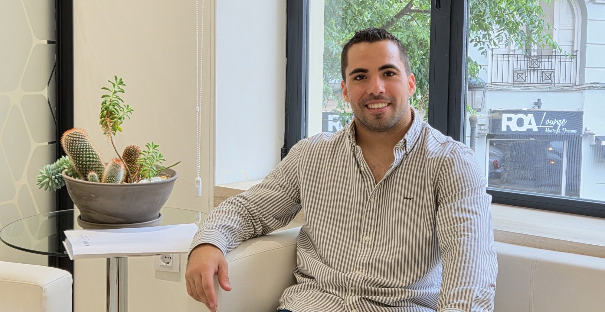

Entender lo que ocurre
Antes de aplicar cualquier técnica, comprender en profundidad qué está pasando, desde cuándo y qué lo mantiene en marcha.
Sobre mí

Soy Carlos Sanz Martínez, psicólogo general sanitario. Mi experiencia se ha desarrollado acompañando a personas en momentos complejos, donde avanzar no siempre es fácil.
Trabajo desde las terapias contextuales, sobre todo la terapia de aceptación y compromiso (ACT) y el mindfulness clínico. Acompaño a jóvenes y adultos en consulta privada, online y en Valencia.
Ver cómo trabajoTrayectoria
Antes de la consulta privada he trabajado en entornos donde el malestar es intenso y las respuestas no son simples. Eso ha definido cómo trabajo hoy.
Primeros años
Empecé en un centro de hospitalización trabajando con personas con trastorno mental grave. Un entorno de sufrimiento intenso y alta desregulación emocional, donde aprendí a intervenir en crisis y a sostener situaciones que no se resuelven con una conversación.
Después
Trabajé en un centro de atención a personas con deterioro cognitivo, con los pacientes y también con sus familias. Ahí incorporé una mirada más amplia: el malestar casi nunca es solo individual, tiene una dimensión familiar y relacional.
Octubre de 2024
Formé parte de los equipos de respuesta psicosocial tras la DANA que afectó a Valencia, atendiendo a personas en plena emergencia.
Actualmente
Psicólogo del Servicio Acompaña de la Generalitat Valenciana, de seguimiento y prevención del suicidio.
En paralelo
Mi propia consulta, online y presencial en Valencia, donde acompaño a jóvenes y adultos desde las terapias contextuales.
Lo que eso ha definido
Todo lo anterior se traduce en tres cosas que vas a notar desde la primera sesión.
Antes de aplicar cualquier técnica, comprender en profundidad qué está pasando, desde cuándo y qué lo mantiene en marcha.
Hay momentos en los que no toca resolver, sino acompañar. Saber estar ahí sin prisa por quitar lo que duele.
Recuperar claridad no siempre es rápido. Trabajamos con objetivos acordados contigo y a un ritmo que puedas sostener.
Formación
Me gradué en Psicología por la Universitat de València y completé el Máster en Psicología General Sanitaria. Desde entonces me he especializado en las áreas donde más falta hace: trauma, conducta suicida e intervención en crisis.
Formación académica
Formación complementaria
Colegiado en el Colegio Oficial de Psicología de la Comunidad Valenciana (COPCV) con el número CV18935.
Primer paso
Puedes reservar directamente una primera sesión o empezar por una videollamada de 15 minutos, sin coste, para ver si soy la persona adecuada.